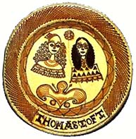

| Slipware
lipware
is a technique that was popular in the 17th and 18th centuries,
before the popularization of onglazes. Slipware usually consists
of earthenware ceramics, on which a liquid clay (so-called 'slip')
has been trailed on with a 'sliptrailer'. Although earthenware was
traditionally used, midfire clays and even stoneware clays (e.g.
the German Bürgel
style) can also be used. The best known advocate of this style or
technique, was the 17th century potter from Staffordshire, England,
Thomas Toft. Toft's work usually consisted of a red earthenware
clay, onto which a lighter, cream colored clay was sliptrailed on,
giving the work the decorative effect. However, as can be seen in
the image on the right, sometimes the piece was first covered with
a cream engobe onto which a darker colored slip was trailed. By
using and combining slips of various colors it is possible to achieve
quite interesting decorative results.
Unfortunately slipware has become somewhat rare in this day and
age of the decal. However, sliptrailing is not difficult to do.
The important thing is to match the shrinkage of the clay and slips
used. The easiest way is to make a slip from the same clay body
you intend to use. Use a light colored body, which you can color
with oxides or stains. Make the slip by drying out the clay and
re-slaking it with water. Add a little less water than a creamy
consistancy and a litle sodium silicate. This will decrease the
moisture content slightly, but retain the liquidity of the slip.
This will also help for a better 'fit' of slip and clay body. Your
slip may now be colored by adding ceramic oxides or carbonates such
as iron oxide, cobalt oxide, cobalt carbonate, copper oxide, copper
carbonate and others. Alternatively, for a larger color palette,
you could also add commercial stains.
The slip is applied with a slip trailer. Commercial slip trailers
can be purchased at your local ceramics store, but you can substitute
the commercial product with a free, used empty catsup (a.k.a. ketchup,
tomato sauce) bottle. Cut off more or less of the tip of the trailer
to get the line widths you want. It's probably a good idea to have
a range of tips and colors in different bottles. (That's going to
be a lot of tomato sauce you'll have!) Once the slip decoration
has been applied and the work is dry, you are ready to proceed as
with your usual processes, i.e. bisqueing and glazing. Have fun!
More Articles
|